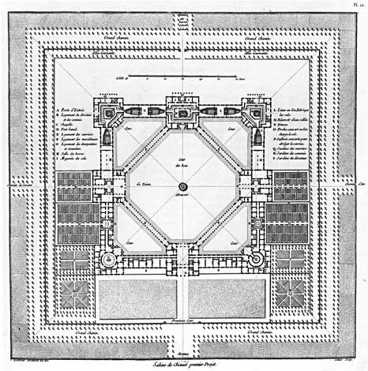
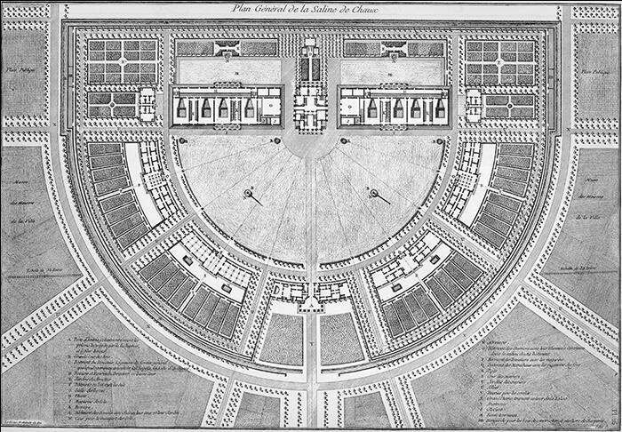
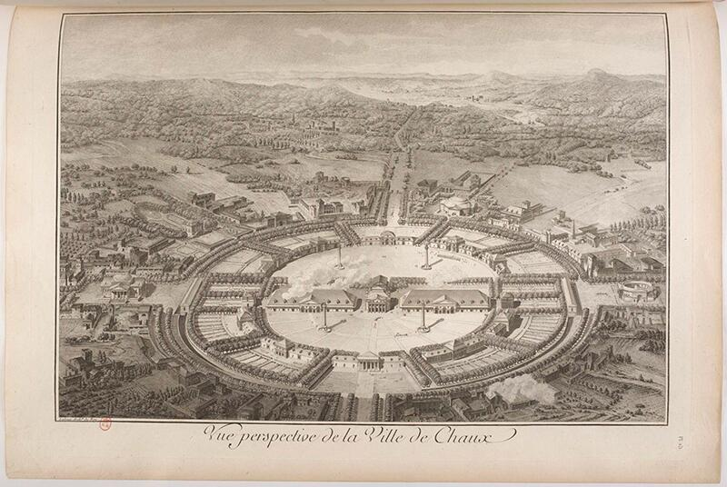
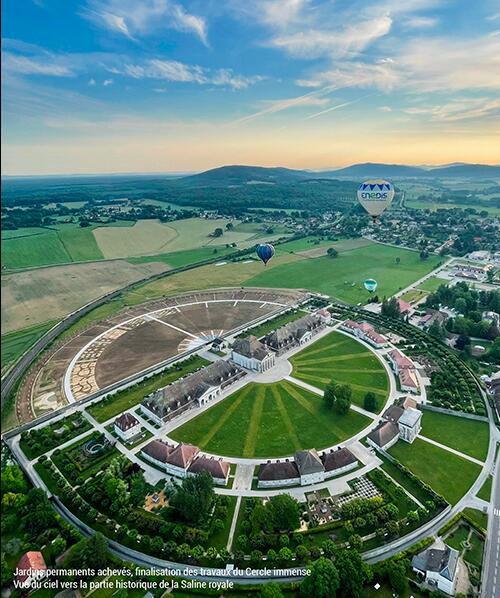
La Saline Royale è uno dei casi più chiari in cui la pianta non rappresenta, ma organizza una visione del mondo. Ledoux costruisce un dispositivo geometrico — un grande emiciclo — che non serve a contenere edifici, ma a ordinare relazioni: tra centro e periferia, tra autorità e lavoro, tra vuoti produttivi e spazi collettivi.
Nella pianta si legge una logica potentissima:
La Saline Royale rende evidente che la pianta è la prima e più radicale forma di progetto. È qui che il campo prende ordine, che le relazioni si definiscono e che l’architettura “regge” o cede. Ledoux mostra che la pianta può essere idee costruita: un sistema coerente che anticipa l’identità dell’opera prima della sua forma tridimensionale.
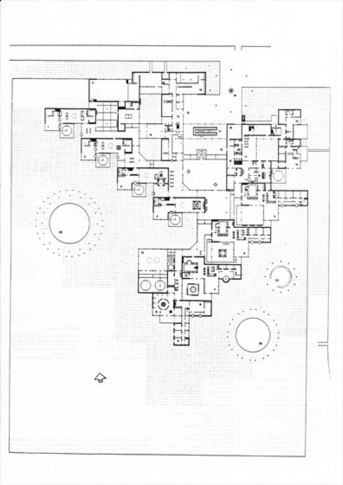
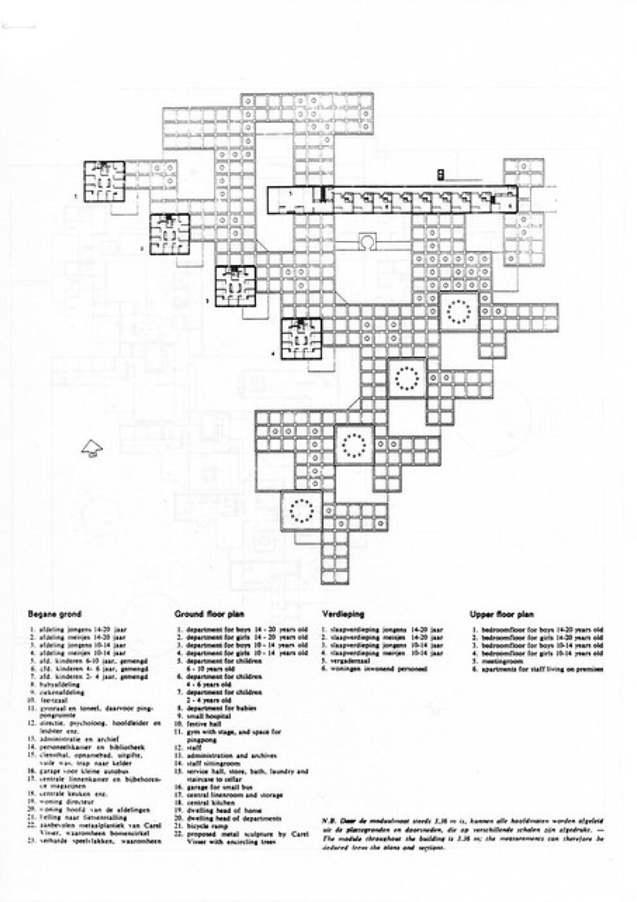
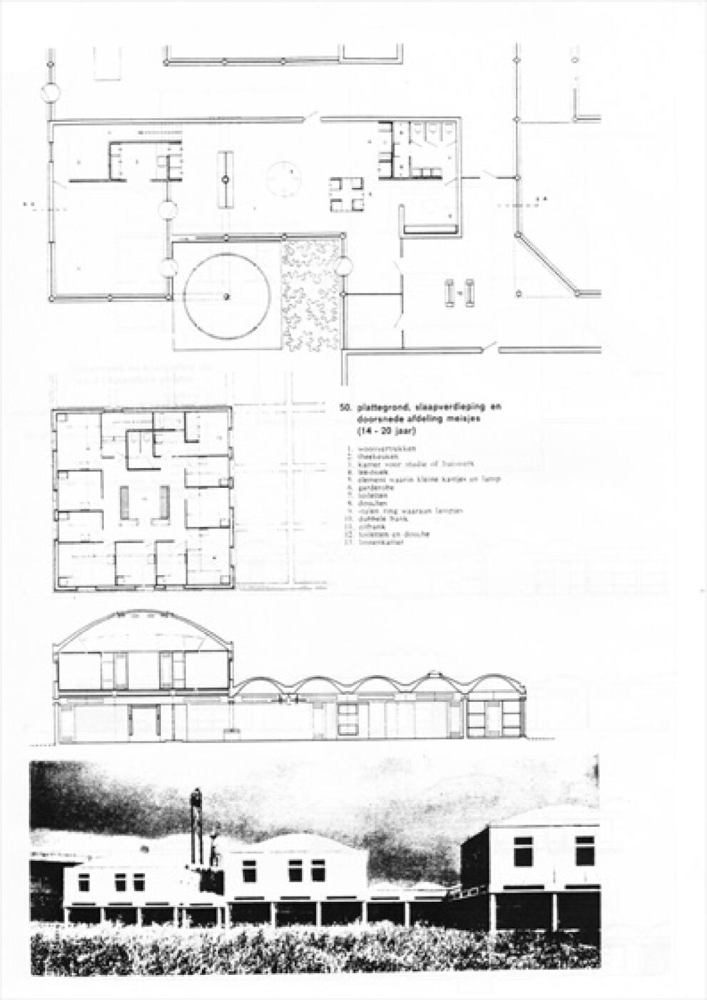
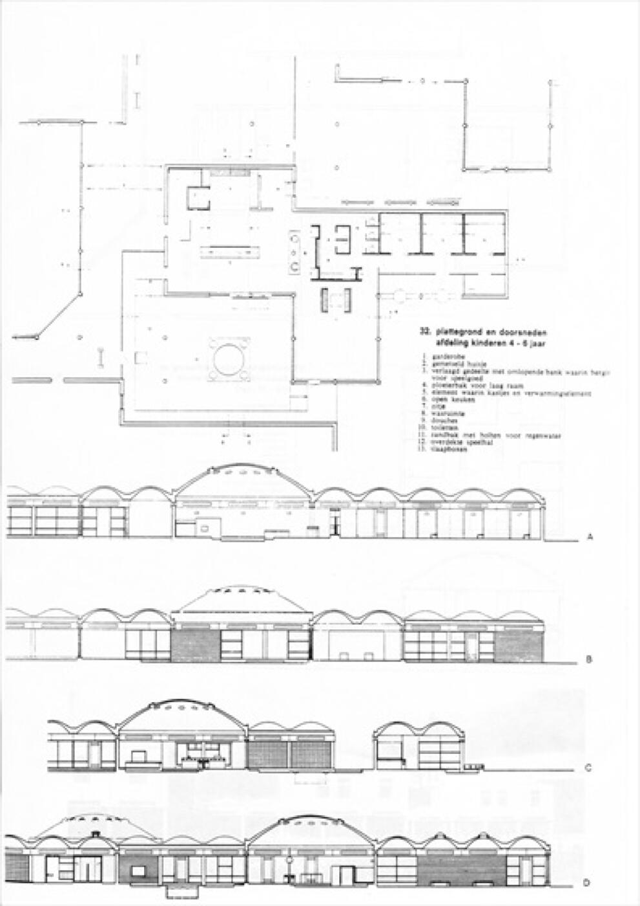
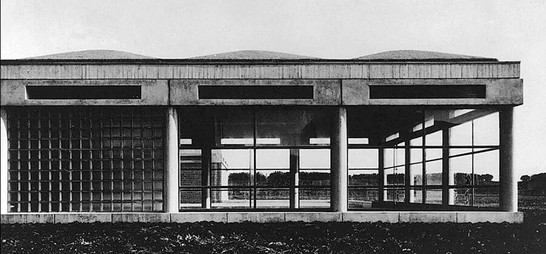
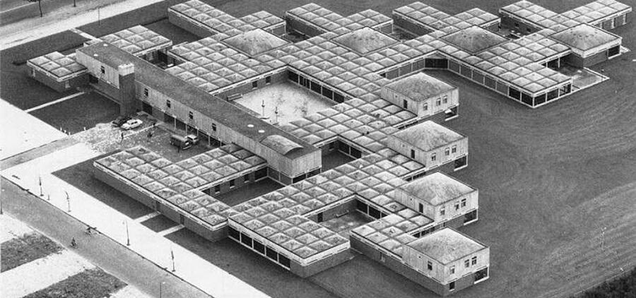
Nell’Orfanotrofio di Amsterdam la pianta non è una figura da disegnare, ma un campo relazionale da costruire. Van Eyck abbandona l’idea moderna di edificio come oggetto unitario e sviluppa invece una costellazione di cellule, tutte diverse e tutte equivalenti, tessute attraverso corti, soglie, micro-piazze e passaggi coperti. È la pianta, più che qualsiasi altra rappresentazione, a rivelare la logica profonda dell’opera: non un organismo centralizzato, ma un sistema aperto, simmetrico solo per affinità, governato dal principio dell’intermediazione — tra grande e piccolo, tra dentro e fuori, tra collettivo e individuale.
Il carattere rivoluzionario del progetto sta proprio nella sua struttura di campo. Non esiste un centro unico: il centro “si sposta” continuamente, a seconda della posizione dell’osservatore. Le relazioni determinano i pesi dello spazio più dei muri, e le connessioni contano più delle stanze. La pianta mostra come la continuità non sia mai lineare, ma fatta di soglie successive, micro-espansioni, nodi irregolari che mantengono il senso di comunità senza mai comprimere l’individuo.
L’organizzazione modulare non produce ripetizione, ma variazione controllata: ogni cellula è simile ma non identica, ogni corte ha una propria luce, ogni giunto genera una possibilità. La pianta funziona come una grammatica dinamica, capace di integrare aggiunte, adattamenti, trasformazioni senza perdere identità. È un progetto che resiste al tempo perché non si fonda sulla forma esterna, ma sulla logica relazionale del campo, che rimane leggibile in ogni sua parte.
Per gli studenti, l’Orfanotrofio dimostra in modo esemplare che la pianta è il luogo in cui l’architettura viene giudicata: ordine, vuoti, sequenze e pesi emergono con precisione e rivelano la qualità profonda del progetto ben oltre qualsiasi prospetto o immagine costruita.
La pianta generale dell'Orfanotrofio di Amsterdam di Aldo van Eyck è un esempio fondamentale dello Strutturalismo olandese e del concetto di "in-between" (spazio intermedio), che realizza l'idea di un edificio come una piccola città e una casa come una città.
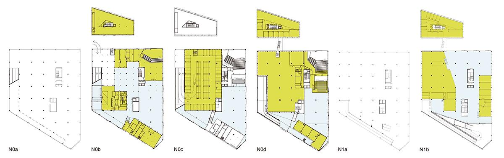
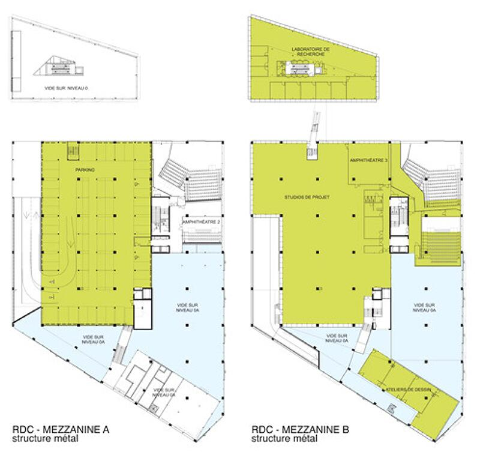
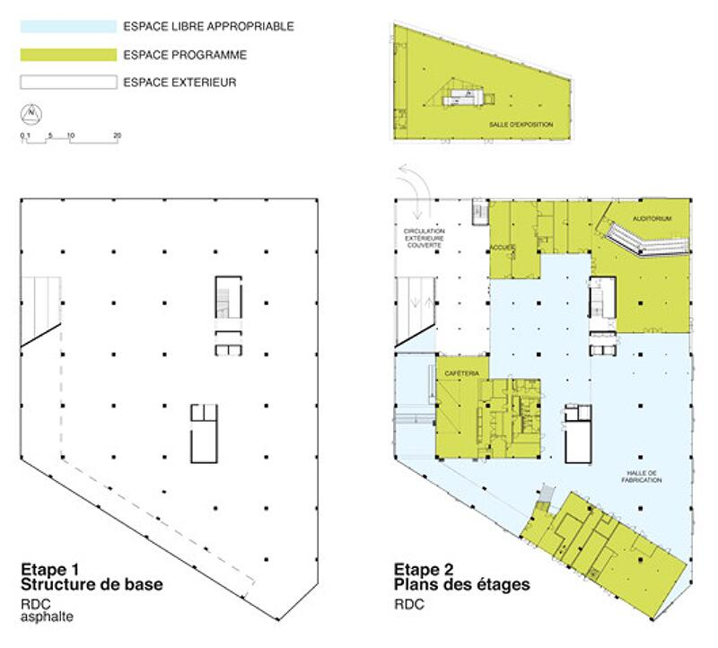
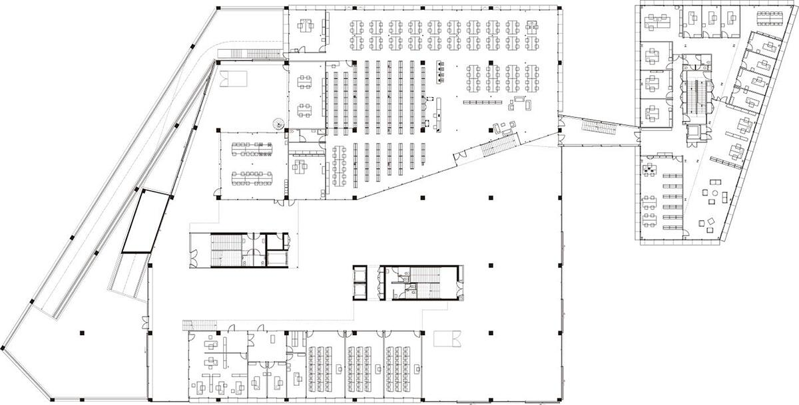
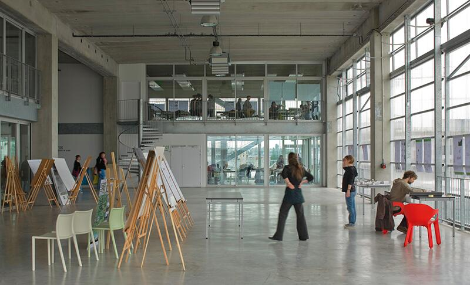
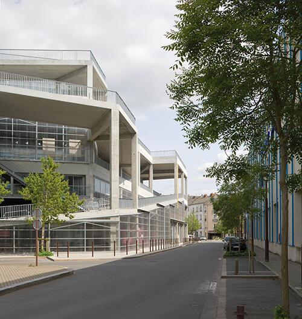
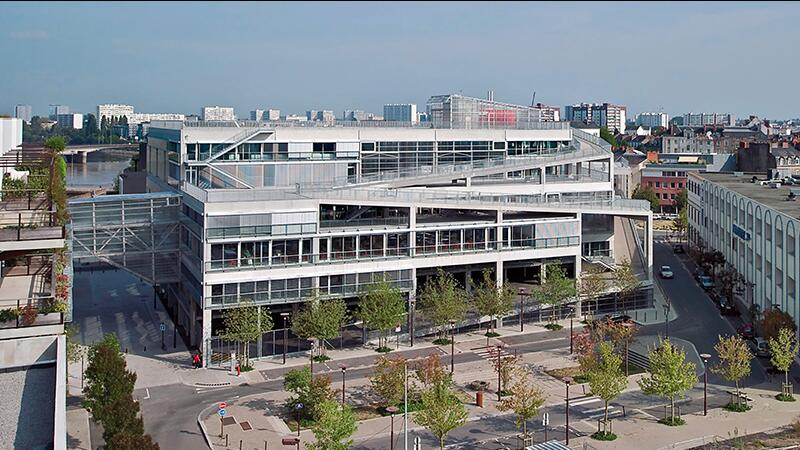
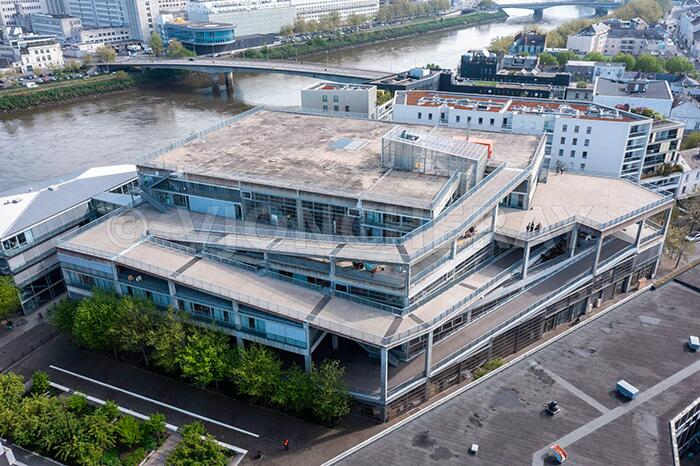
Nella École d’Architecture de Nantes, Lacaton & Vassal utilizzano la pianta come strumento critico per sovvertire l’idea tradizionale di edificio scolastico. La pianta non organizza funzioni, ma definisce un campo strutturale aperto, un sistema di vuoti, moduli e margini che permette una libertà d’uso radicale. Ciò che normalmente sarebbe risolto come sequenza di aule e corridoi diventa un’unica superficie continua, ritmata da una maglia portante che non impone gerarchie, ma supporta vari scenari possibili.
Il grande vuoto centrale — un piano intero senza partizioni — è il cuore del progetto: uno spazio libero che la pianta mostra nella sua forza concettuale prima ancora di rivelarsi nei volumi. In pianta, infatti, la struttura metallica, i vuoti, gli spessori e le soglie climatiche diventano immediatamente leggibili come un sistema logico, non come un insieme di ambienti. È nella pianta che emerge con chiarezza la visione dell’edificio come infrastruttura di progetto, non come contenitore programmatico.
L’organizzazione perimetrale dei blocchi più chiusi (studi, uffici, servizi), lasciando il centro completamente aperto, produce un campo spaziale reversibile, predisposto alla trasformazione continua. La pianta non descrive ciò che c’è, ma ciò che può accadere: è una piattaforma di possibilità, una matrice evolutiva. Anche il rapporto tra spazi interni ed esterni — terrazze, logge, superfici climatiche intermedie — appare chiarissimo proprio in pianta, dove la continuità del bordo dissolve il confine tra edificio e città.
In questo modo, Lacaton & Vassal mostrano come la pianta non sia un semplice disegno di distribuzione, ma un giudizio sulla struttura del campo: una presa di posizione teorica e progettuale che definisce la libertà d'uso come parametro primario. La pianta diventa così il luogo in cui l’architettura afferma la propria idea di spazio: aperto, trasformabile, non prescrittivo — un vero strumento critico della forma.